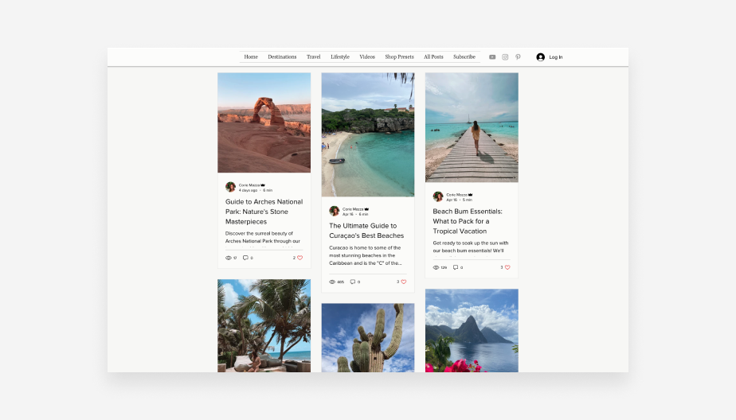

Best trip-planning blog: Corlu Travels
Corlu Travels offers valuable insights not only for travel bloggers but for anyone looking to build a user-friendly interface. Its owner, Corie Mazza, obviously put a lot of thought into making her site easy to navigate. For example, she used Wix's Mega Menu feature to incorporate submenus into her site header. This strategic move enhances the site's accessibility, allowing visitors to easily explore different sections. Navigation is seamlessly handled, providing visitors with two options: they can freely browse the "All Posts" page or choose a specific category page tailored to their interests. Corie cleverly uses unique layouts to differentiate each category and add to the overall visual appeal. The "Destinations" page stands out as an impressive feat of design. Corie masterfully incorporates hover effects, making the page interactive and captivating. Drawing on her most attractive images from each location, she piques readers' curiosity and ignites a desire for wanderlust. Within the posts, Corie intersperses images every 100 words or so to provide an immersive experience. Note: You can easily switch or customize layouts on Wix Blog without having to worry about performing a complete overhaul. Users can simply choose a different layout option and the AI will do the work of redesigning the blog for you. Key takeaways Have a plan for organizing your content. If you're starting your blog, you might have enough content to organize it by category. On the other hand, developed blogs may benefit from doing so. Creating blog categories can make it easier for visitors to find the content they’re looking for and help search engines better understand the range of valuable content your blog offers. Visual storytelling is just as important as written storytelling on travel blogs. The point of a travel blog is to inspire readers to take that next trip. While your writing may be interesting and of value, people who seek out travel content also want to see beautiful imagery. Make sure your blog delivers.
